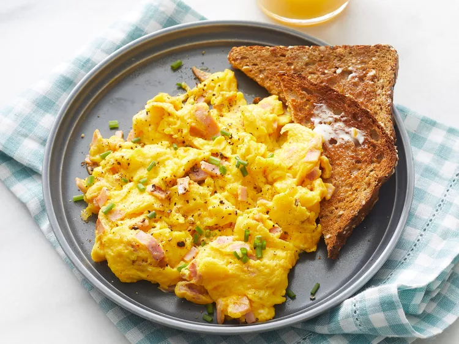

Egg Scrambles

Description
"This best scrambled egg recipe took a bit of tweaking, but I've finally made the best scrambled eggs ever! My friends and family love it. I make it almost once a week before school."
Ingredients
- 2 Large Eggs
- 2 Thin Slices of Cooked Ham, Diced (Optional)
- 2 Tablespoons of Sliced Cheddar Cheese
- 1 Teaspoon of Heavy Whipping Cream
- 1/2 Teaspoon of Butter
Steps
- Gather all ingredients.
- Whisk eggs in a small bowl until smooth. Mix in ham, Cheddar cheese, and heavy cream.
- Melt butter in a skillet over medium heat. Pour in egg mixture; cook and stir until set but still moist, 3 to 5 minutes.